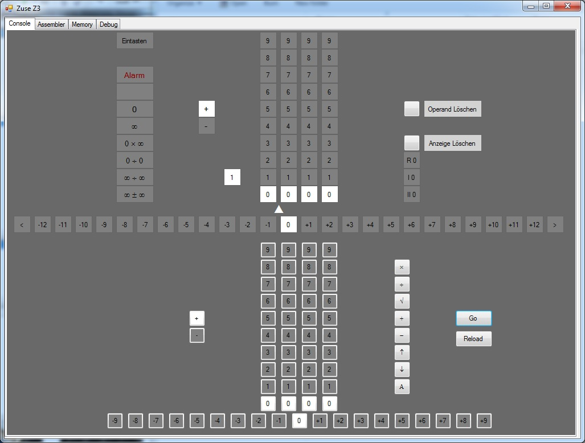
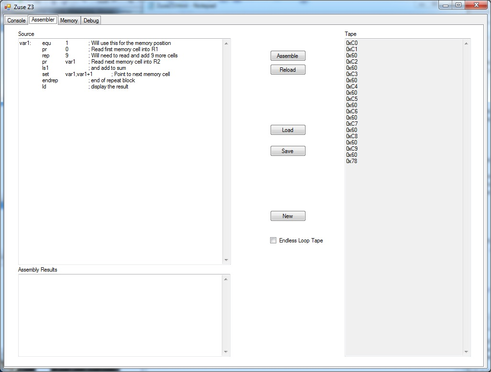
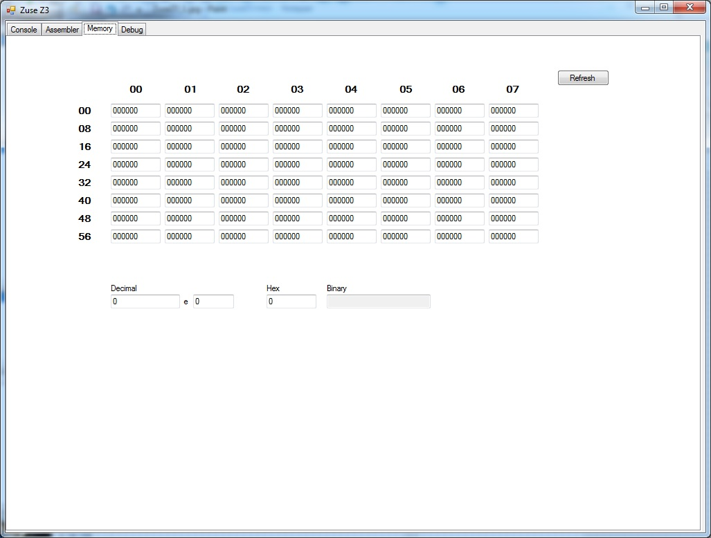
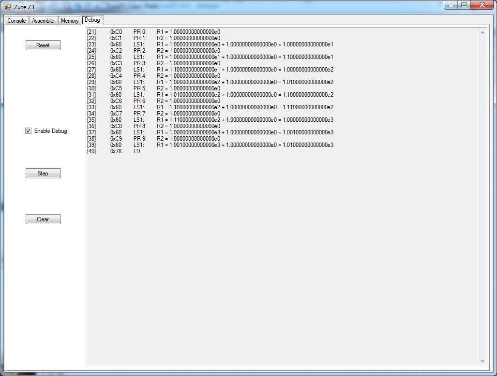

The Z3 is considered to be the world's first programmable digital computing device. It was an electromechanical computer built By Konrade Zuse and completed in 1941. It was based upon Zuse's Z1, which was a fully mechanical machine that never really ran very well. Archetecturally speaking, the Z1 and the Z3 are very similar, operating on the same command set, except that the Z3 had the square root function that the Z1 did not. Other than this, programs written for either machine could actually be run on the other.
Although the Z3 was not by Turing's definition a general purpose computer, mainly for lacking descision making and program control statements, it was a remarkable machine. The Z3 operated on 22 bit floating point numbers. Floating point was unheard of on early machines and yet this was the number mode the Z3 used. Another remarkable feature of this machine is that it had several floating point exceptions built in that would stop the machine and indicate which type of error had occurred.
Because the machine was electro-mechanical it was quite slow, only performing about 3 additions every 2 seconds, or one multiplication in 3 seconds.
The Z3 had a memory of 60 22-bit words which could be used to hold data. Programs however came from punched tape. The Z3 would retrieve the next instruction from the tape and execute it, continuing in this fashion until the machine ran out of tape. A primitive form of looping could be achieved by taping one end of tape to the other in a continuous loop, but other than this there was no looping possible on the Z3.
Download the Zuse Z3 simulator
Note: This program requires .net 4.0 framework to be installed



